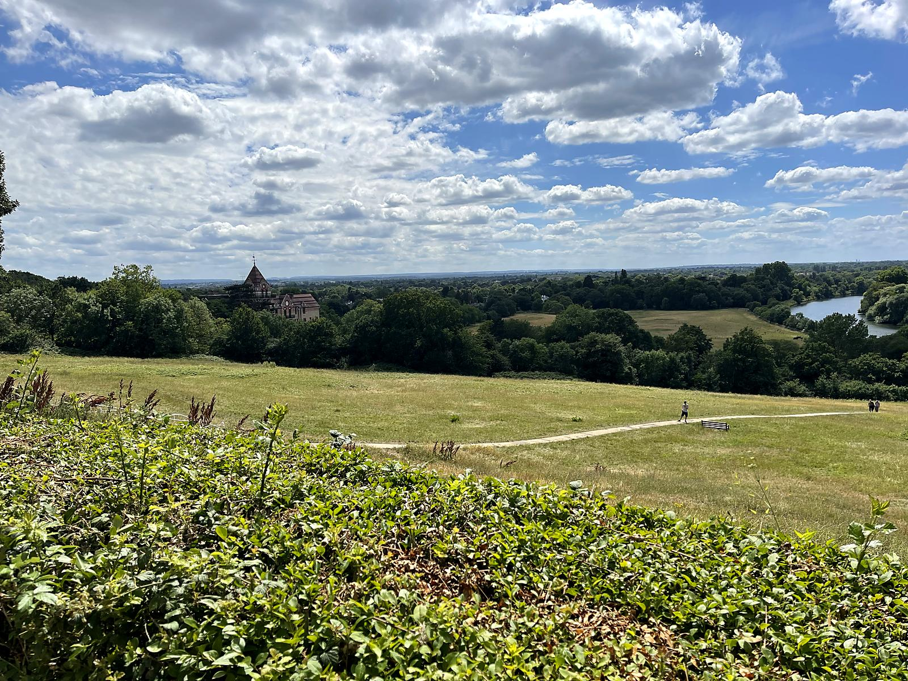
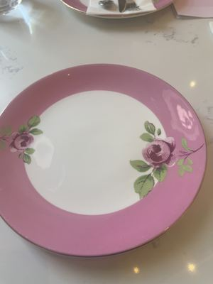
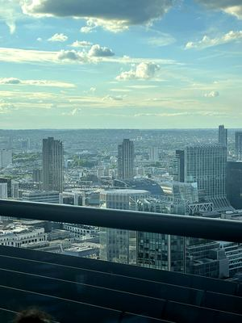
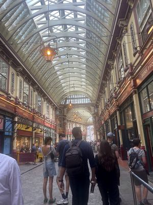
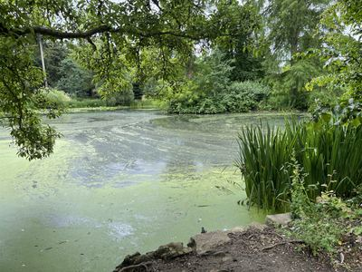
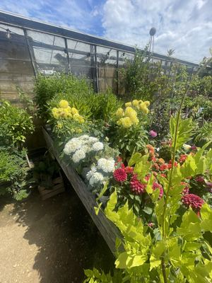

Mockup for #47 — not the live site. Top section = what every theme would share (hero, terracotta-pick banner, map). Below: two ways to put photos in the itinerary, shown on the real Richmond day, plus the phone treatment. React and we'll build the winner.
A Trip Remembered
June 29 – July 7, 2026
Betty & Hugh




3–4 photos ride in the day header. Compact; rows below stay text-only. (Header photos come from your featured_photos.csv.)



No header photos; every schedule item gets its own picture (also CSV-chosen, falling back to that location's first photo). Richer, taller; each photo opens that item's grid.
Narrow screens get the full banner up top, then a single day photo under each day header (per your direction). Shown at iPhone width: